2D Logistic Regression Demo
Based on code by Mark Girolami
% This file is from pmtk3.googlecode.com setSeed(0); D = loadData('rip'); X = D.rip_dat_tr; Xt = D.rip_dat_te; Ntrain = size(X,1); Ntest = size(Xt,1); ytrain = X(:,3); X(:,3)=[]; ytest = Xt(:,3); Xt(:,3)=[]; Xtrain = X; Xtest = Xt; clear X Xt polyOrders = 1:10 ; for trial=1:length(polyOrders) Polynomial_Order = polyOrders(trial); lambda = 1/100; %Limits and grid size for contour plotting R=1.3; Step=0.1; [xs,ys]=meshgrid(-R:Step:R,-R:Step:R); [ngrid, ngrid]=size(xs); grid = [reshape(xs,ngrid*ngrid,1) reshape(ys,ngrid*ngrid,1)]; % Polynomial Basis expansion XtrainPoly = ones(Ntrain,1); XtestPoly = ones(Ntest,1); gridPoly = ones(ngrid*ngrid,1); for i = 1:Polynomial_Order XtrainPoly = [XtrainPoly Xtrain.^i]; XtestPoly = [XtestPoly Xtest.^i]; gridPoly = [gridPoly grid.^i]; end [N,D] = size(XtrainPoly); pp = preprocessorCreate('standardizeX', false, 'addOnes', false); model = logregFit(XtrainPoly,ytrain,'lambda', lambda, 'preproc', pp); [yhat, Posterior] = logregPredict(model, gridPoly); [trainPredLabels] = logregPredict(model, XtrainPoly); [testPredLabels] = logregPredict(model, XtestPoly); %fprintf('\n\n 0-1 error using MAP Value\n'); Train_Error(trial) = 100 - 100*sum(trainPredLabels == ytrain)/Ntrain; Test_Error(trial) = 100 - 100*sum(testPredLabels == ytest)/Ntest; [modelVB, logevVB(trial)] = logregFitBayes(XtrainPoly,ytrain,'method','vb', 'preproc', pp); %[yhatVB, PosteriorVB] = logregPredictBayes(modelVB, gridPoly); %Posterior = PosteriorVB; % The VB predictions are much smoother if 0 % plot the data points and show the contour of P(C=1|x) figure; contour(xs,ys,reshape(Posterior,[ngrid,ngrid])); hold on plot(Xtrain(find(ytrain==1),1), Xtrain(find(ytrain==1),2),'r.'); plot(Xtrain(find(ytrain==0),1), Xtrain(find(ytrain==0),2),'o'); title(sprintf('P(C=1|x) for degree %d', Polynomial_Order)) end if 1 figure; % plot P(C=1|x)=0.5 i.e. the separating line [cc,hh]=contour(xs,ys,reshape(Posterior,[ngrid,ngrid]),[0.5 0.5]); set(hh,'linewidth',4,'color','k'); hold on plot(Xtrain(find(ytrain==1),1), Xtrain(find(ytrain==1),2),'r.'); plot(Xtrain(find(ytrain==0),1), Xtrain(find(ytrain==0),2),'o'); title(sprintf('Degree %d, error rates: train = %3.2f, test = %3.2f', ... Polynomial_Order, Train_Error(trial), Test_Error(trial))) d = Polynomial_Order; printPmtkFigure(sprintf('logregDemoGirolamiDeg%d', d)); end end % trial figure; hold on plot(polyOrders, Train_Error, 'r-o', 'linewidth', 3, 'markersize', 10); plot(polyOrders, Test_Error, 'b:s', 'linewidth', 3, 'markersize', 10); legend('train', 'test'); ylabel('misclassification rates'); xlabel('degree') printPmtkFigure('logregDemoGirolamiErr'); post = exp(normalizeLogspace(logevVB)); figure; bar(post); set(gca,'xticklabel',polyOrders); title('p(m|D)') printPmtkFigure('logregDemoGirolamiPost');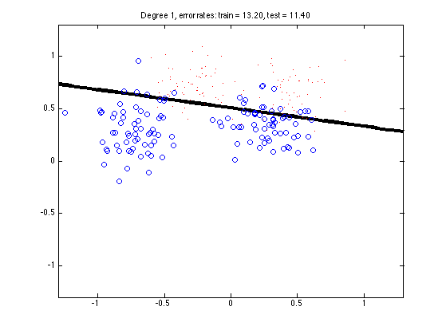 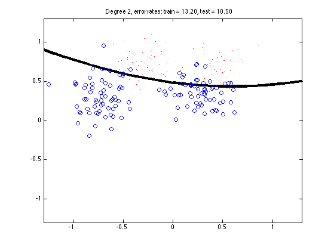 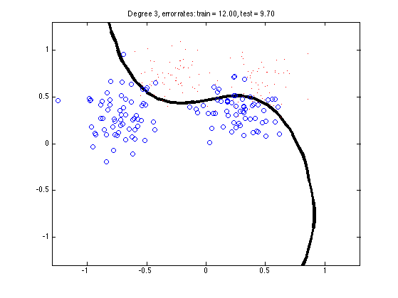 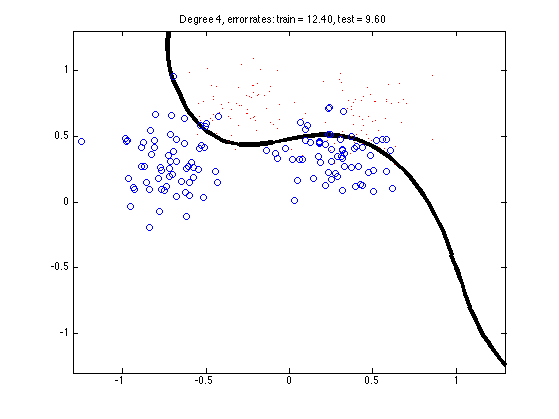 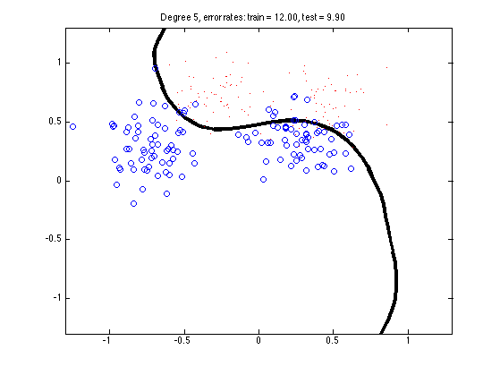 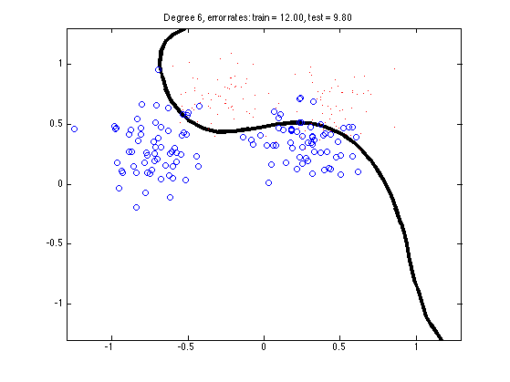 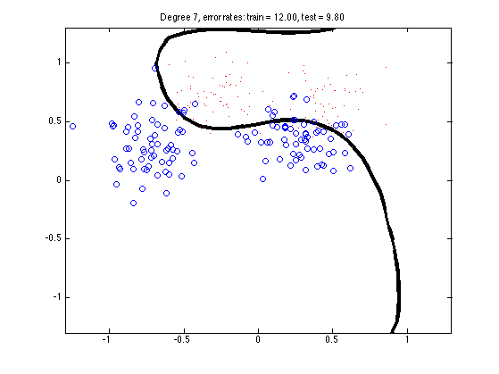 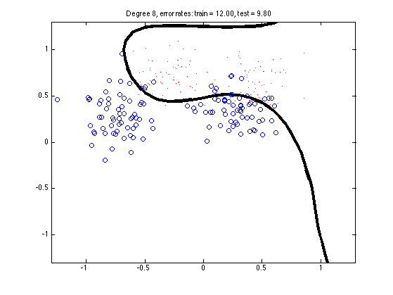 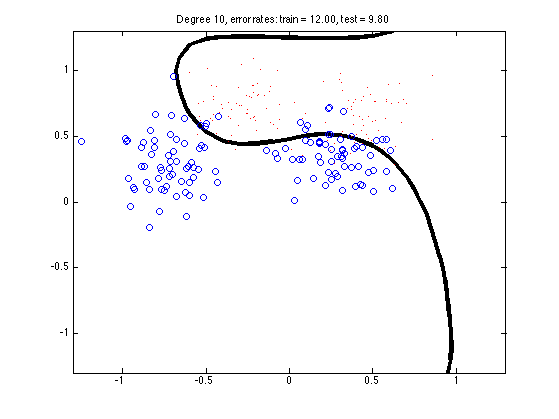 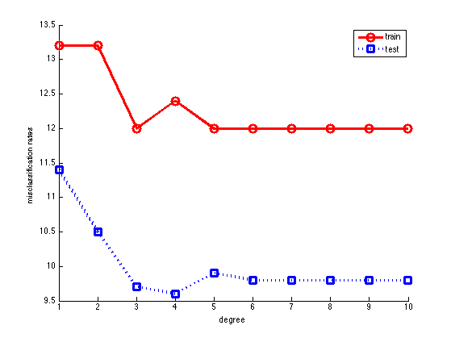 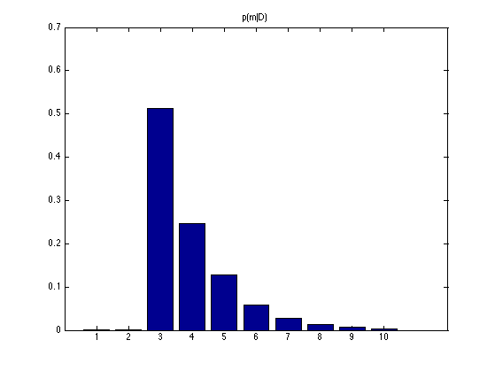